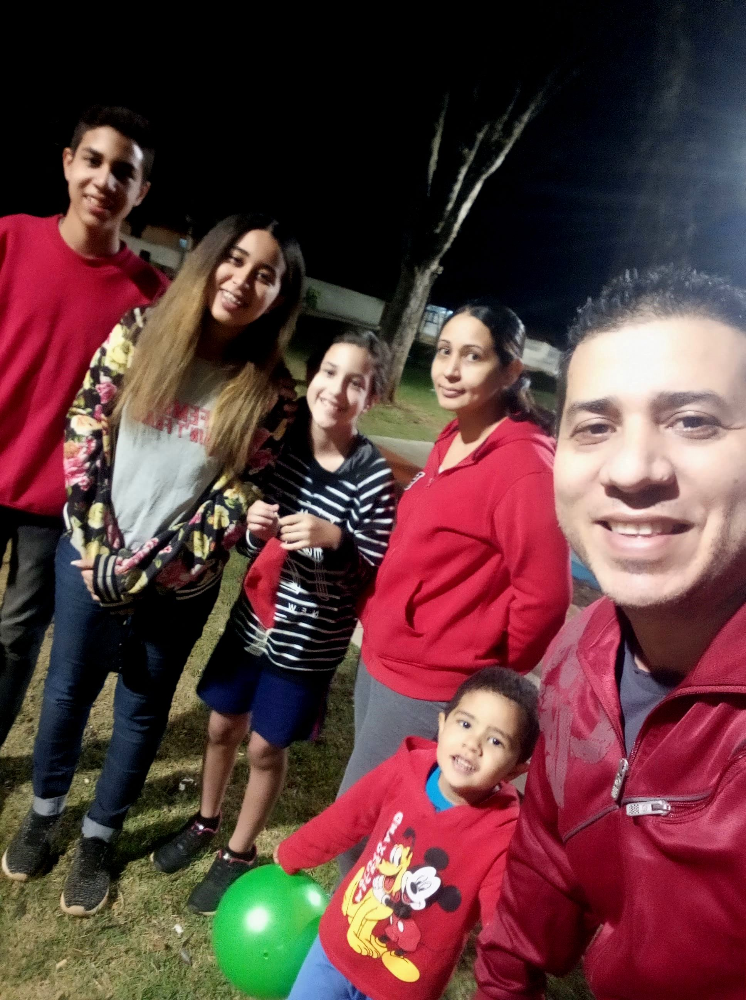
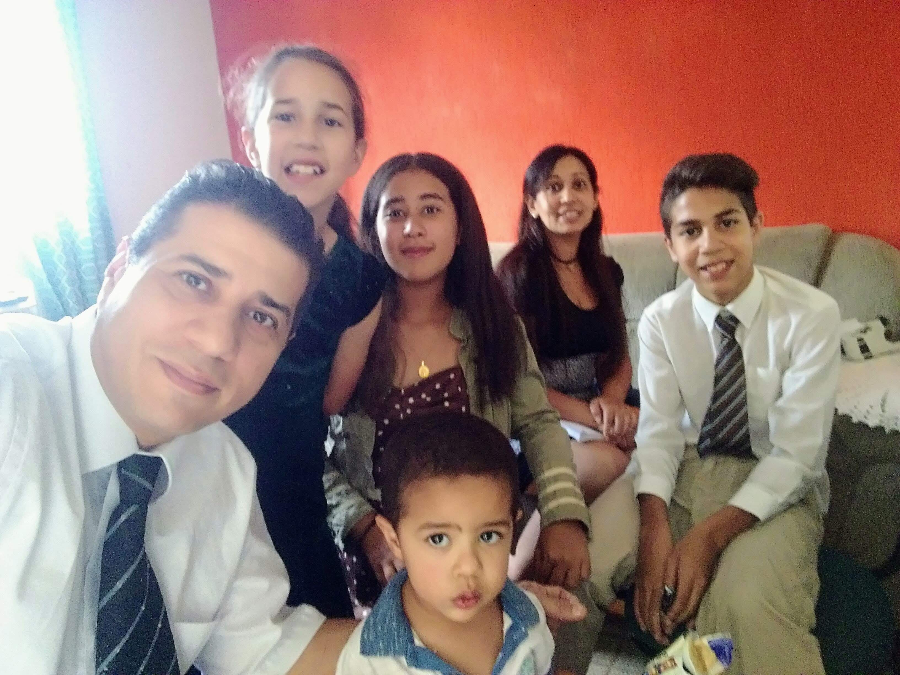
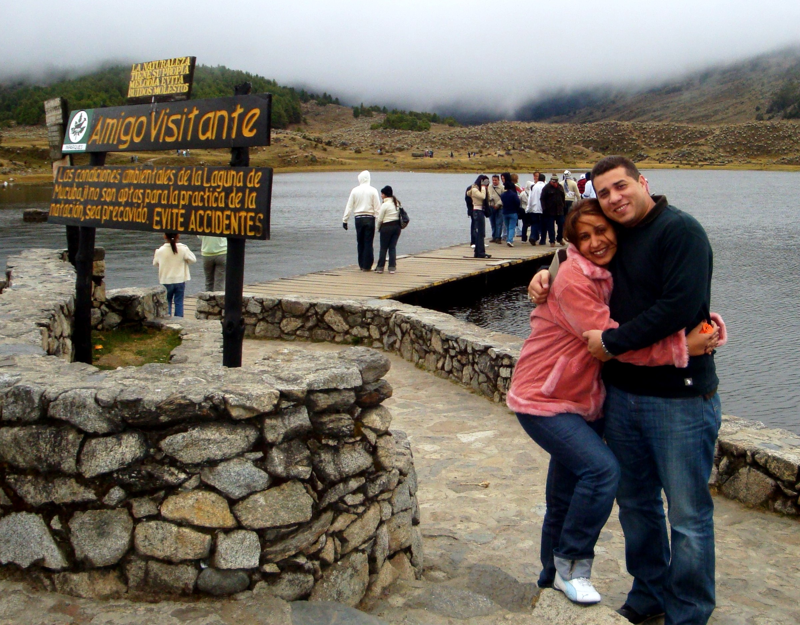
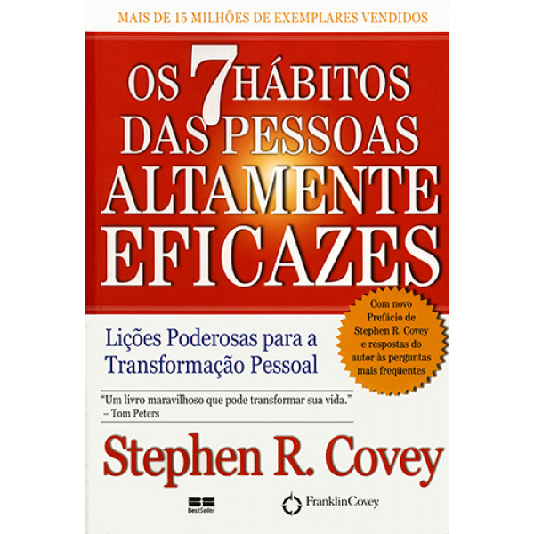

O que eu gosto de Fazer
Compartilhar em Família
Ler
Escutar Música
Esportes
- Futebol
- Basketball
- Voleyball
- Pin Pon
Aprender
A FAMÍLIA foi ordenada por Deus. O casamento entre o homem e a mulher é essencial para Seu plano eterno. Os filhos têm o direito de nascer dentro dos laços do matrimônio e de ser criados por pai e mãe que honrem os votos matrimoniais com total fidelidade. A felicidade na vida familiar é mais provável de ser alcançada quando fundamentada nos ensinamentos do Senhor Jesus Cristo. O casamento e a família bem-sucedidos são estabelecidos e mantidos sob os princípios da fé, da oração, do arrependimento, do perdão, do respeito, do amor, da compaixão, do trabalho e de atividades recreativas salutares. Segundo o modelo divino, o pai deve presidir a família com amor e retidão, tendo a responsabilidade de atender às necessidades de seus familiares e de protegê-los. A responsabilidade primordial da mãe é cuidar dos filhos. Nessas atribuições sagradas, o pai e a mãe têm a obrigação de ajudar-se mutuamente, como parceiros iguais. Enfermidades, falecimentos ou outras circunstâncias podem exigir adaptações específicas. Outros parentes devem oferecer ajuda quando necessário.
  É preciso pensar na leitura como um meio para se alcançar o pensamento critico. Pensar não é somente uma ação intelectual, é mais complexo: é um atividade que almeja desvendar o mundo e a si mesmo. E a escola, como um todo, precisa desenvolver no educando a capacidade de pensar e, consequentemente, se conhecer.
Você se beneficiará grandemente se seguir esse conselho. Diariamente, o estudo significativo das escrituras ajuda-nos a ser receptivos aos sussurros do Espírito Santo. Ele edifica a nossa fé, fortifica-nos contra a tentação e ajuda-nos a aproximar-nos de nosso Pai e de Seu Amado Filho.
Desenvolva um plano para o seu estudo pessoal das escrituras. Considere a possibilidade de reservar algum tempo a cada dia para o estudo das escrituras. Durante esse tempo, leia com cuidado, prestando atenção aos sussurros do Espírito. Peça ao Pai Celestial que o ajude a saber o que Ele deseja que você aprenda e faça.
Continue a ler as escrituras, especialmente o Livro de Mórmon, por toda a vida. Você descobrirá tesouros nas escrituras continuamente, encontrando novo significado e novas aplicações delas ao estudá-las em diferentes estágios da vida.
Continue a ler as escrituras, especialmente o Livro de Mórmon, por toda a vida. Você descobrirá tesouros nas escrituras continuamente, encontrando novo significado e novas aplicações delas ao estudá-las em diferentes estágios da vida.
Continue a ler as escrituras, especialmente o Livro de Mórmon, por toda a vida. Você descobrirá tesouros nas escrituras continuamente, encontrando novo significado e novas aplicações delas ao estudá-las em diferentes estágios da vida.
Se você é casado reserve algum tempo a cada dia para ler as escrituras em família. Esse esforço pode ser difícil, mas ele produzirá resultados maravilhosos e eternos. Sob a direção do Espírito, planeje a leitura de escrituras que atendam às necessidades de sua família. Não tenha receio de ler as escrituras para as crianças pequenas. A linguagem desses registros sagrados tem poder para tocar até os mais jovens.
Ouvir música não é só um entretenimento e uma medida para acalmar e relaxar – ela pode trazer diversos benefícios para a saúde, como alívio de dores, melhora da memória e até mesmo um estímulo para a prática de atividade física.
Você precisa encarar um projeto grande? Ouça um pouco de música. Estudos revelam que música de fundo é capaz de elevar o desempenho cognitivo das pessoas quando realizam tarefas como exames acadêmicos... Leia mais em:
Gosto de jugar:
Meu Jogador Favorito é o Roberto Carlos y meu Time Favorito é o Real Madrid

Estudos no mundo todo comprovam que aprender coisas novas é o melhor recurso pra manter a mente jovem. Expandir o conhecimento é tão importante quanto praticar atividade física. Quando a gente aprende, novas conexões entre os neurônios são criadas e ainda deixamos mais fortes os que já existem.